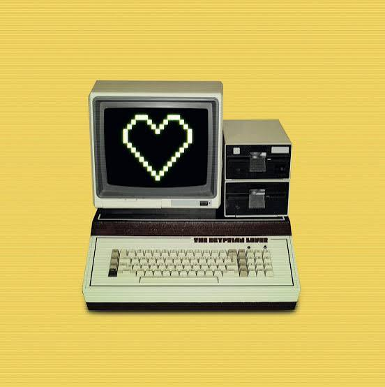

I have always loved South Florida ever since I had to leave her as a child. The beach was always beautiful, and her waves would crash like clockwork. I need to go back! So, once I am finished with summer semester, find a tech job (or any job really), I am picking up and moving my entire life back to Florida. I look forward to hearing those waves again, and having summer year round again.
Ashley's Adventure Journal
Computer Science Travel Fitness Life
02/02/2026: Becomming a Tech Baddie

My journey has been rooted in hospitality for years. I have worked in fast-paced environments where communication, multitasking, and problem-solving were part of my daily routine. From serving guests to stepping into leadership roles, I learned how to stay calm under pressure and how to manage people and situations with confidence.
Over time, I naturally grew into positions where others relied on me. I trained new team members, handled difficult customer situations, and helped keep operations running smoothly. Those experiences shaped me into someone who is organized, adaptable, and comfortable taking charge when needed.
Now, I am transitioning into the tech world while studying Computer Science. Learning programming, web development, and cloud concepts has been a new challenge, but also an exciting one. I am taking everything I learned in hospitality—leadership, communication, and resilience—and applying it to build a future in technology. This shift isn’t just a career change for me; it’s the next level of who I’m becoming.